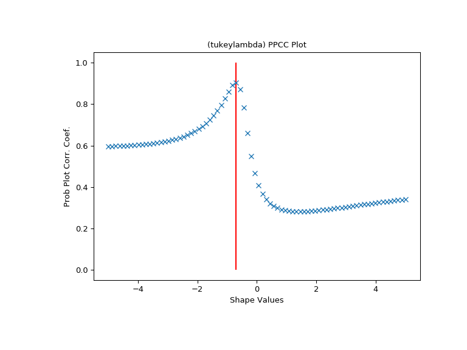

scipy.stats.ppcc_max¶
-
scipy.stats.ppcc_max(x, brack=(0.0, 1.0), dist='tukeylambda')[source]¶ Calculate the shape parameter that maximizes the PPCC.
The probability plot correlation coefficient (PPCC) plot can be used to determine the optimal shape parameter for a one-parameter family of distributions. ppcc_max returns the shape parameter that would maximize the probability plot correlation coefficient for the given data to a one-parameter family of distributions.
- Parameters
- xarray_like
Input array.
- bracktuple, optional
Triple (a,b,c) where (a<b<c). If bracket consists of two numbers (a, c) then they are assumed to be a starting interval for a downhill bracket search (see
scipy.optimize.brent).- diststr or stats.distributions instance, optional
Distribution or distribution function name. Objects that look enough like a stats.distributions instance (i.e. they have a
ppfmethod) are also accepted. The default is'tukeylambda'.
- Returns
- shape_valuefloat
The shape parameter at which the probability plot correlation coefficient reaches its max value.
Notes
The brack keyword serves as a starting point which is useful in corner cases. One can use a plot to obtain a rough visual estimate of the location for the maximum to start the search near it.
References
- 1
J.J. Filliben, “The Probability Plot Correlation Coefficient Test for Normality”, Technometrics, Vol. 17, pp. 111-117, 1975.
- 2
https://www.itl.nist.gov/div898/handbook/eda/section3/ppccplot.htm
Examples
First we generate some random data from a Tukey-Lambda distribution, with shape parameter -0.7:
>>> from scipy import stats >>> x = stats.tukeylambda.rvs(-0.7, loc=2, scale=0.5, size=10000, ... random_state=1234567) + 1e4
Now we explore this data with a PPCC plot as well as the related probability plot and Box-Cox normplot. A red line is drawn where we expect the PPCC value to be maximal (at the shape parameter -0.7 used above):
>>> import matplotlib.pyplot as plt >>> fig = plt.figure(figsize=(8, 6)) >>> ax = fig.add_subplot(111) >>> res = stats.ppcc_plot(x, -5, 5, plot=ax)
We calculate the value where the shape should reach its maximum and a red line is drawn there. The line should coincide with the highest point in the ppcc_plot.
>>> max = stats.ppcc_max(x) >>> ax.vlines(max, 0, 1, colors='r', label='Expected shape value')
>>> plt.show()
